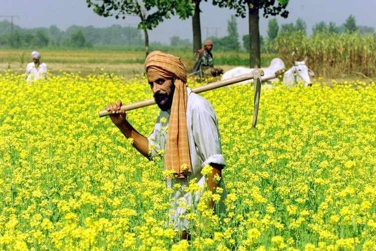

Introduction

1. E-Farming is the web application that will help the farmer to perform the agro marketing leading to achieve success and increase in their standard of living. website will also provide market-wise, commodity-wise report to the farmer in interactive way. Government will put forward the new schemes for the farmers. Unique interface will be provided for applying and viewing the schemes.
2. The main objectives of this project is building a website which will help farmers from Indian villages to sell their products to different city markets. This website will act as unique and secure way to perform agro-marketing ,purchasing. The site will guide the farmer’s in all the aspects, the current market rate of different products, the total sale and earned profit.
4. There is no computerized system for the farmers to sell their product, currently the farmer goes to nearest market handover his product to a particular agent. Many times, farmers are not even aware of the schemes and compensation provided by government. Current system doesn’t provide the way of e-learning for farmer that will provide the knowledge of new technique in farming.
5. It is an computerized system for the farmer’s sell their product through a single site. It provide an awareness to the farmer’s about the various schemes provided by the government. It provides all new agricultural ideas to the farmer’s.
6. E-Farming Seeds Crops Fertilizer Useful Links Equipments -Varieties -Cost -Product website -Varieties -Buying sites -Machines -Working videos -Cost -Seasons -Diseases & Symptoms -Government portal -Contact info
7. All the facilities are available in single website. Farmer’s can get information about all the agricultural related items. People can buy the agriculture products directly without an agent.